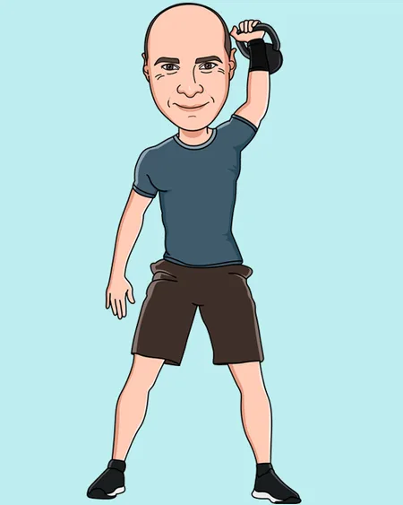

Clinic director / 01
Margaret Hanlon
Clinical specialist · Clinic director
Manual physiotherapy and rehabilitation
Our clinic & team
A clinic in the centre of Lucan village, led by clinical specialists Margaret Hanlon and John Shenton.
Clinical specialist · Clinic director
Manual physiotherapy and rehabilitation

Clinical specialist · Clinic director
Manual physiotherapy and rehabilitation
As listed on the clinic website.
Physiotherapist
Manual therapy · Rehabilitation · Occupational health · Pilates
Physiotherapist
Manual therapy · Rehabilitation · Pilates
Physiotherapist
Manual therapy · Rehabilitation · Sports · Occupational health
Pilates physiotherapist
Physiotherapist-led Pilates
Acupuncture physiotherapist
Acupuncture
The Lucan clinic
The clinic accepts self-referrals, GP referrals and consultant referrals. It also advises other physiotherapists on complex cases.
CityPhysio provides medico-legal assessments. Margaret Hanlon is listed as an expert witness for the Irish Society of Chartered Physiotherapists.
Find us in LucanYour next step
Book an appointment, or speak to the team
if you’re unsure where to begin.